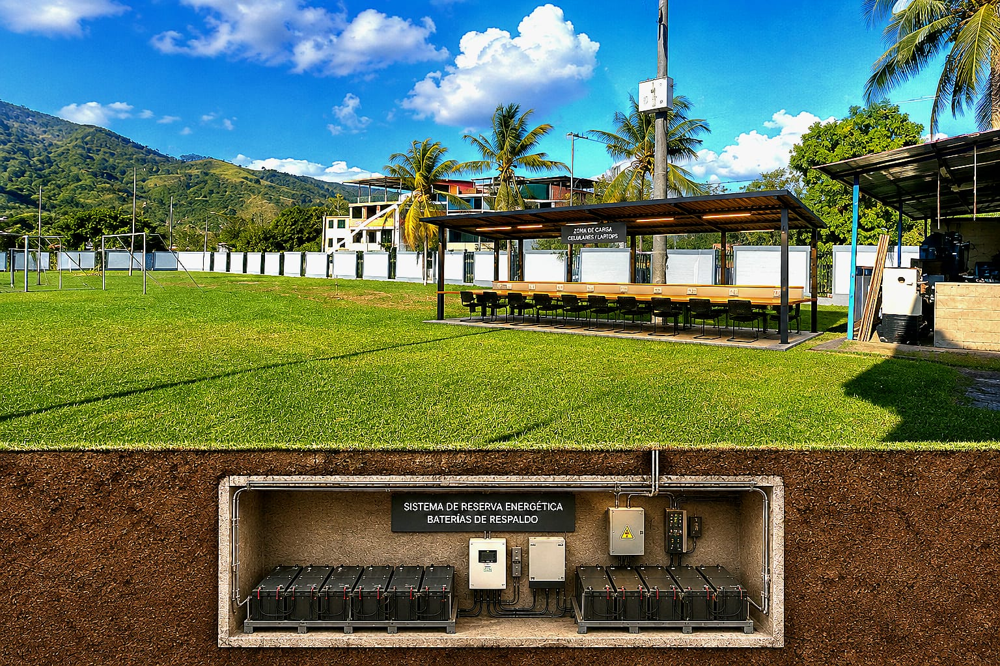
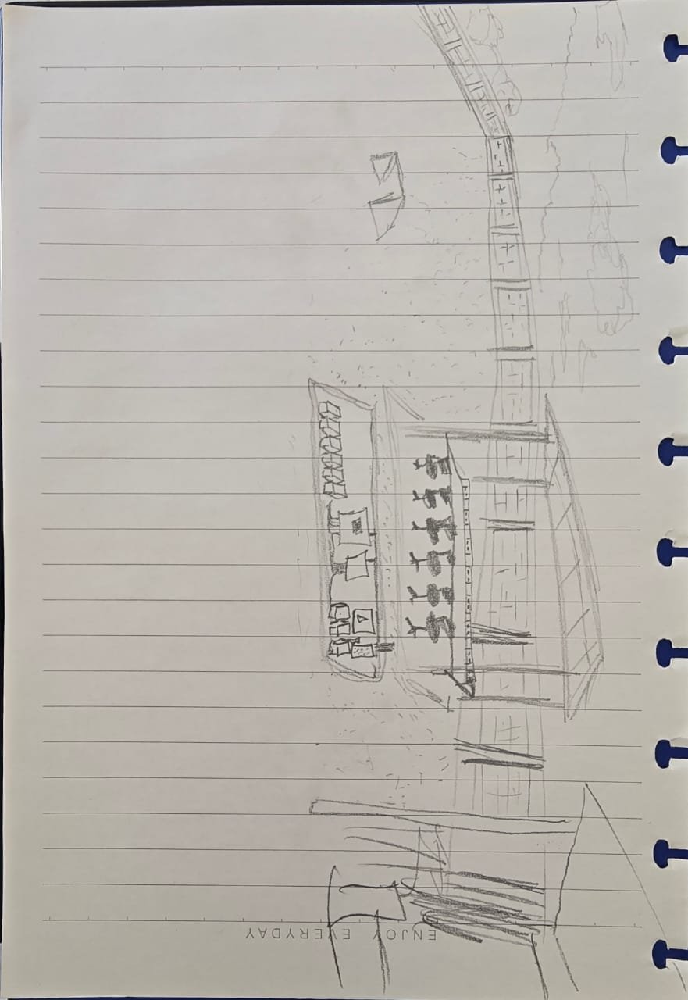
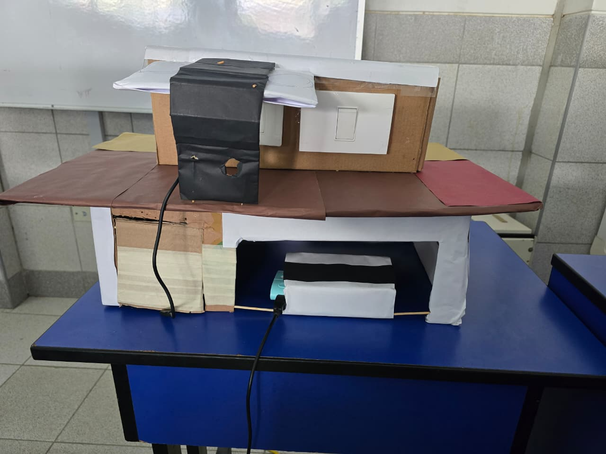
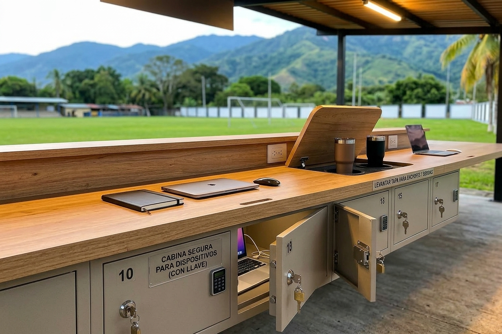

SENATI
Preguntas de la entrevista
Poco, no tanto. A veces sí, como otras veces no.
Sí, como en tres ocasiones.
Cargaría lo necesario para poder resolver mis problemas.
Mi teléfono, ya que es más importante.
Que esté en un ambiente tranquilo, que las personas no estén entrando y saliendo o, de repente, que haya una persona que recepcione, lo cargue y se lo puedas pedir. Como también, que pongan una lista de registro.
Entrevista al estudiante 1
SENATI
Preguntas de la entrevista
Mayormente no utilizo mi celular, así que pocas veces.
Sí, varias veces.
Una a dos veces cuando tenga clases.
Mi laptop, que es lo principal, donde guardo todos mis documentos.
Cámaras.
Entrevista al estudiante 2
SENATI
Preguntas de la entrevista
Con frecuencia continua, a veces sí, como otras veces no.
Sí, a veces, cuando el sistema de SENATI prohíbe ciertas funciones, utilizo mis dispositivos propios y ya no están cargados, y eso afecta.
Para cargar la laptop, sí, ya que soy desarrollador.
Laptop y celular.
Alguien que esté cuidando.
Entrevista al estudiante 3
SENATI
Preguntas de la encuesta
Durante las clases, muy seguido se me queda sin batería, más que nada las laptops.
Sí, más que nada el tema de la laptop.
Sería bastante genial que lo implementen, lo usaría bastante y muchas veces.
Lo principal que cargaría sería mi laptop y, de vez en cuando, el celular también.
Tal vez una cámara, más que nada la cámara.
Entrevista al estudiante 4
SENATI
Preguntas de la entrevista
Mi celular no se queda siempre sin batería, pero sí hay uno que otro día que no cuento con batería y eso me dificulta mucho realizar mis exámenes.
Sí, porque sin batería, obviamente, no se puede ingresar a lo que son los correos y al Blackboard tampoco, así que, de cierto modo, ha sido motivo por el cual no pude realizar los tests.
En mi caso, tenemos clases desde las 7:45 a. m. hasta la 1:00 p. m., entonces salimos un rato, pero yo vivo lejos. Entonces, tengo que regresar y no se me hace más favorable ir hasta mi casa justamente porque está lejos. Entonces, fácilmente salgo, almuerzo y tengo que regresar al toque. En ese lapso podría avanzar en esa área, realizando algunas actividades de TESD o algunas tareas adicionales.
Principalmente, mi celular, porque es un medio por donde más nos comunicamos y también es más fácil de transportar en comparación con una laptop. Pero sí, también cuando nos dejan actividades más trabajosas o actividades que se van a realizar con la laptop o algún programa, ya tenemos que traer nuestras laptops y se gasta la batería, y tenemos que recurrir a ese medio o área para poder cargarlo.
No estaría mal que lo vigilen, ya sea con una cámara o con sus lockers, para así evitar quizás que se caiga o que se pierda algo, aunque obviamente no se debe de perder.
Entrevista al estudiante 5
Definir
Identificamos claramente el problema.
Los estudiantes de SENATI necesitan disponer de una fuente de energía accesible y segura durante su jornada académica, debido a que los puntos de carga disponibles pueden ser insuficientes y la falta de energía en sus dispositivos puede afectar sus actividades académicas.
Actualmente, cuando la batería de sus dispositivos está baja, pueden tener dificultades para encontrar un lugar adecuado y disponible para cargarlos.
Necesidad principal
Estudiante de SENATI que permanece varias horas dentro de la institución y utiliza dispositivos electrónicos.
Oportunidad
Almacenar energía en una batería para utilizarla todos los días y durante los cortes de luz.
Pregunta de desafío
¿Cómo podríamos proporcionar a los estudiantes de SENATI un punto de energía accesible, seguro y autónomo que permita disponer de energía cuando la necesiten?
Idear
Generamos diferentes soluciones para el problema.
JHEFERSON
Cajas o espacios donde guardar laptop y un celular para cargar y guadarlos seguro.
Mesas largas con toma Corrientes al centro protegidos contra el agua mas sus baterias de reserva para casos de corte de luz.
JOCELYN
Casilleros con cerraduras.
Informaciòn del panel solar.
MILAGRO
Camaras.
Controlador de carga.
Jessica
Mesa de estudio.
Panel solar.
Said
Área de descanso para los estudiantes de SENATI, con tomacorrientes.
Mejorar o habilitar más toma corrientes, existentes en las aulas de SENATI.
JHEFERSON
Mesas largas con toma Corrientes al centro protegidos contra el agua mas sus baterias de reserva para casos de corte de luz.


Prototipar
Convertimos la idea en una propuesta tangible.


Evaluar
Probamos el prototipo y recogemos opiniones.
Objetivo
Probar el prototipo con 5 alumnos para conocer su facilidad de uso, utilidad y posibles mejoras.
Evidencia de las pruebas
Prueba 1
Prueba 2
Prueba 3
Prueba 4
Prueba 5
Resultados de las pruebas
| Alumno | Entendió la propuesta | Usaría el punto de carga | Le resultó útil | Comentario |
|---|---|---|---|---|
| 1 | Sí | Sí | Sí | Esta bonito, me sirve mucho |
| 2 | Sí | Sí | Sí | Eso de tener carga directa y carga de reserva, para cualquier inconveniente es genial |
| 3 | Sí | Sí | Sí | Es recomendable para muchos estudiantes, en caso se vaya la luz va a ser muy interesante usarlo |
| 4 | Sí | Sí | Sí | Para cuantos estudiantes, cuantos conectores seran? Tener las medidas mas exactas |
| 5 | Sí | Sí | Sí | Me siento satisfecho ya que tienen esta oportunidad de salvarnos de apuros. Espero que lo implementen. |
Mejoras propuestas
- Incorporar más puertos USB y enchufes diversos.
- Tener las medidas exactas para facilitar la elabroacion.
- Se podria implementar paneles solares en el techo como una fuente extra de energia renovable
- Mejorar la comodidad del espacio.